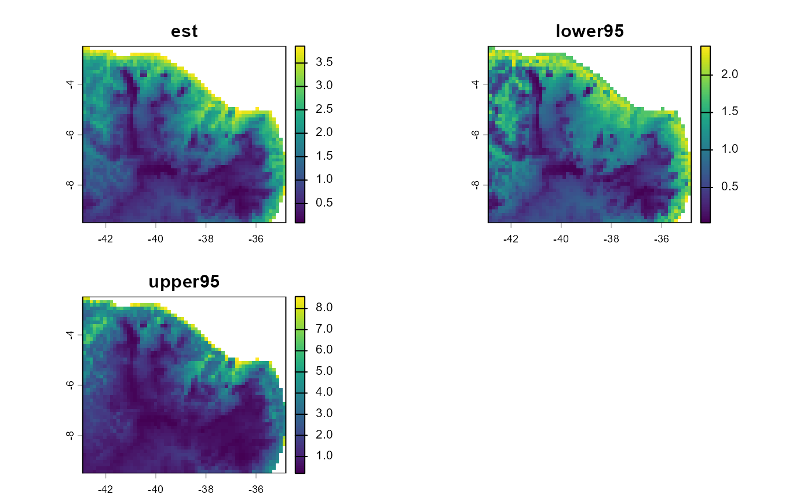

Extracts per-cell conductance values and pointwise confidence intervals from
a fitted terradish model, returning either a raster (when the graph
stores its stack) or a matrix.
Arguments
- x
A
terradish_graphobject returned byconductance_surface.- ...
Additional arguments passed to methods.
- fit
A fitted model returned by
terradish.- quantile
Confidence level for the pointwise conductance interval. The default
0.95gives a 95 applied to the MLE ofthetaand its inverse Hessian. This is the same quantity thatconfint()callslevelandsummary()callsconf.level.- support
Optional support constraint for conductance evaluation. Use
"none"(default) to evaluate the fitted conductance model over the full graph covariate domain, or"focal"to clamp selected covariates to focal-site support.- support_probs
Optional length-2 probability vector used with
support = "focal"to compute clamping bounds from focal-cell quantiles. The defaultc(0, 1)uses the focal min/max.- clamp_covariates
Optional character vector of covariate names to clamp when
support = "focal". Defaults to all numeric covariates inx$x.
Value
If x$stack is non-NULL (the default when
saveStack = TRUE in conductance_surface), a three-layer
terra::SpatRaster with layer names:
estPoint-estimate conductance at each active cell.
lower<Q>Lower bound of the
quantile*100% interval (e.g.lower95for the defaultquantile = 0.95).upper<Q>Upper bound of the interval.
Otherwise, a numeric matrix with one row per active cell and columns
est, lower<Q>, and upper<Q>.
Conductance is relative: a common multiplier is absorbed by the measurement model, so compare values among cells of one surface instead of reading them as absolute rates.
Details
Confidence intervals are computed on the log-conductance scale and then
exponentiated, so the point estimate always lies within the interval. The
intervals are asymptotic (delta method) and reflect only uncertainty in the
conductance parameters theta; they do not account for uncertainty in
the nuisance parameters phi.
With support = "focal", selected covariates are clamped to focal-site
support before conductance is evaluated. This constrains prediction to
empirical covariate support among x$demes and can stabilize extreme
tails when focal sampling is sparse.
A no-structure fit leaves conductance coefficients unidentified and cannot produce a fitted conductance surface. Other nuisance-parameter boundaries do not by themselves prevent prediction.
On a new graph, prediction reuses the fitted log-linear terms, spline knots
and centers, or Gaussian smoothing parameters and post-smoothing scaling.
It does not estimate new centers or scales on the prediction landscape.
If the original inputs were scaled before fitting, use
scale_covariates(new_rasters, reference = original_scaled_rasters)
before constructing the new graph. Other conductance factories are not
supported for prediction to a new graph.
See also
terradish, conductance_surface,
plot.terradish
Other model fitting:
terradish(),
terradish_algorithm(),
terradish_distance(),
terradish_grid(),
terradish_methods
Examples
# \donttest{
library(terra)
data(melip)
covariates <- c(terra::unwrap(melip.altitude),
terra::unwrap(melip.forestcover))
coords <- terra::unwrap(melip.coords)
names(covariates) <- c("altitude", "forestcover")
# Coarsened so the example runs quickly; name layers, then scale.
covariates <- scale_covariates(terra::aggregate(covariates, fact = 3,
na.rm = TRUE))
# Keep one site per raster cell.
keep <- !duplicated(terra::cellFromXY(covariates, terra::crds(coords)))
Fst <- melip.Fst[keep, keep]
surface <- conductance_surface(covariates, coords[keep])
fit <- terradish(Fst ~ forestcover + altitude, surface,
measurement_model = mlpe)
cond <- conductance(surface, fit)
names(cond) # "est", "lower95", "upper95"
#> [1] "est" "lower95" "upper95"
plot(cond) # relative conductance and its pointwise 95% limits

# }